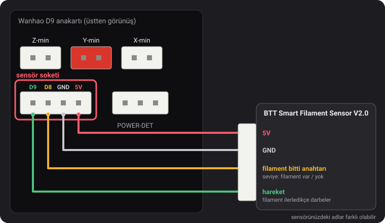
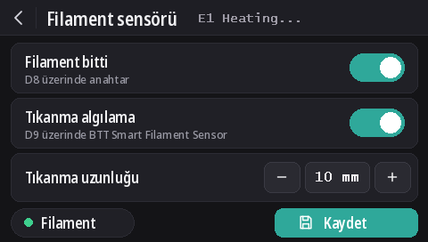

Filament sensörleri
v2.0.5'ten itibaren bu firmware'ler iki tür sensör okur: Wanhao'nun filament bitti anahtarı ve filamentin ilerlemeyi bıraktığını da fark eden (dolaşmış makara, tıkanma, dişlinin yediği filament) BTT Smart Filament Sensor V2.0. Filament bitti algılama her modelde varsayılan olarak açıktır, tıkanma algılama ise kapalıdır.
Sensör soketi

Endstop soketlerinin altında, POWER-DET yazısının solundaki 4 pinli soket, bu sırayla D9, D8, GND ve 5V pinlerini taşır. Pin adları, dustovich'in bulup Discord sunucusunda paylaştığı bir Wanhao kablolama şemasından geliyor; kartın arka yüzünde aynı dört pin CTRL, BTN, GND ve VCC olarak yazılıdır.
- D8, Wanhao'nun kendi firmware'inin okuduğu filament bitti girişidir.
- D9 Wanhao'nun firmware'i tarafından kullanılmaz: bu derlemeler BTT sensörünün hareket sinyalini bu pinden okur.
Ekranda
Ekranda DGUS Reloaded 2.0 varken (firmware v2.0.9 veya daha yeni): Ayarlar → Filament → Filament sensörü.
- Filament bitti tüm algılamayı açar veya kapatır,
M412 S1/M412 S0gibi. - Tıkanma algılama, tıkanma algılamayı alttaki uzunlukla açar ya da kapatır (
L0). - Tıkanma uzunluğu: − ve + değeri 1 mm değiştirir; elle yazmak için sayıya dokunun.
- Filament noktası, filament bitti anahtarı filamenti gördüğü sürece yeşil, görmediğinde kırmızıdır.
- Değişiklikler hemen uygulanır. Kaydet onları saklar,
M500gibi. Geri oku kaydetmeden çıkar: kayıtlı ayarlar bir sonraki açılışta geri gelir.

M412 komutları
Her şey USB üzerinden bir seri terminalden ayarlanır (Pronterface, dilimleyicinizin ya da OctoPrint'in terminali,
250000 baud). Parametreler tek bir komutta birleştirilebilir, örneğin M412 S1 L10.
| Komut | Ne yapar |
|---|---|
M412 | Durumu gösterir, örneğin Filament runout ON ; Distance 5.00mm ; Motion distance 0.00mm. |
M412 S1 | Algılamayı açar: filament bitti anahtarını, tıkanma uzunluğu 0 değilse tıkanma algılamayı da. |
M412 S0 | Tüm algılamayı kapatır: anahtar ve tıkanma. |
M412 D5 | Anahtar filament görmediğinde, sensör ile nozul arasında kalan filamenti kullanmak için duraklatmadan önce 5 mm daha baskıya devam eder. Varsayılan 5 mm. |
M412 L10 | Tıkanma algılamayı açar (yalnızca BTT sensörü): sensörün tekerleği dönmeden ekstrüderden 10 mm filament geçtiğinde baskıyı duraklatır. |
M412 L0 | Tıkanma algılamayı kapatır, filament bitti anahtarına dokunmaz. Varsayılan budur. |
M500 | Ayarları kaydeder. Bu komut olmadan, yazıcı kapatılınca değişiklik kaybolur. |
M119 | filament satırı filament takılıyken TRIGGERED, takılı değilken open gösterir. |
M412 L0 ve tek başına kullanılan L, bu firmware'lere dahil edilen Marlin değişikliğimizden
(MarlinFirmware/Marlin#28585) gelir. Bu değişiklik olmayan Marlin'de tek başına L
yok sayılır ve L0 baskıyı hemen tıkanma varmış gibi duraklatır.
Wanhao'nun filament bitti anahtarı
Firmware'e filamentin olup olmadığını bildirir. Filament bittiğinde baskı 5 mm daha filament kullandıktan sonra duraklar ve ekran bir filament değişimi başlatır.
v2.0.8'den beri her modelde varsayılan olarak açıktır. D8'e hiçbir şey takılı değilken kartın pull-up direnci pini 5 V'ta tutar ve bu “filament var” olarak okunur: algılama bu durumda hiç tetiklenmez, bu yüzden sensör takılı olsun ya da olmasın açık kalabilir. D8'e bir filament bitti anahtarı takın, hemen çalışır.
- Tıkanma algılama kapalı kalır (
L0): bu anahtar filamentin hareket ettiğini göremez. - Anahtarı kapatmak için:
M412 S0ve ardındanM500. - Önceki bir sürümün kaydettiği ayarlar açık/kapalı durumunu korur. Açmak için:
M412 S1ve ardındanM500, ya da varsayılanlara sıfırlayın (M502ve ardındanM500; bu, prob Z ofsetinizi ve mesh'inizi de siler).
BTT Smart Filament Sensor V2.0
Bu sensörün iki çıkışı vardır ve firmware bunları farklı şekilde okur:
- Filament bitti anahtarı (D8'e) bir seviye verir: filament varken 5 V, filament bitince 0 V.
- Hareket çıkışı (D9'a), filament geçerken döndürdüğü küçük bir tekerlekten gelir. Her birkaç milimetre filamentte çıkış 0 V ile 5 V arasında değişir. Firmware yalnızca bu değişimleri izler: ekstrüder tek bir değişim olmadan tıkanma uzunluğu kadar filament iterse filament takip etmiyordur (dolaşmış makara, tıkanma, dişlinin yediği filament) ve baskı duraklar. Filament bitti anahtarı bunu göremez: tıkanma sırasında filament hâlâ oradadır.
Kablolama
5V ucunu 5V'a, GND ucunu GND'ye, filament bitti anahtarı sinyalini D8 pinine ve hareket sinyalini D9 pinine bağlayın. Sensörün kablosunda yazan adlar farklı olabilir.
Açmak
M412 S1 L10
M500Baskılar sebepsiz yere duraklıyorsa tıkanma uzunluğunu artırın: M412 L15 ve ardından M500. Yalnızca
filament bitti anahtarını kullanmak için: M412 L0 ve ardından M500.
Kontrol etmek
M412: Filament runout ON ; Distance 5.00mm ; Motion distance 10.00mm.- Filament takılıyken
M119: filament: TRIGGERED. Bu satır filamenti takıp çıkardığınızda değil de elle ittiğinizde değişiyorsa, iki sinyal kablosu yer değiştirmiştir: D8 ile D9'u yer değiştirin.
L0 hiç
tetiklemez), ama henüz BTT sensörünün kendisiyle test edilmedi. Anahtar ters okuyorsa (filament takılıyken open),
bize Discord üzerinden bildirin.v2.0.5 veya v2.0.6'dan güncelleme
Bu sürümlerde tıkanma algılamayı kapatmanın bir yolu yoktu, bu yüzden asla ulaşılamayacak kadar uzun bir tıkanma
uzunluğu kullanıyorlardı: v2.0.5'te 100 m (aslında fazla kısa: 1 kg'lık bir makaranın yaklaşık üçte biri; bu miktardan
sonra açık bırakılmış bir yazıcı boş yere duraklayabiliyordu) ve v2.0.6'da 10 km. Yazıcı açılırken v2.0.7 bu iki değeri
L0 olarak yükler. BTT sensörü için ayarladığınız gerçek bir uzunluk, örneğin L10, korunur. v2.0.4
veya daha eski bir sürümden gelindiğinde, bu sürümlerin kaydettiği 0 yerine 5 mm'lik filament bitti mesafesi yüklenir.